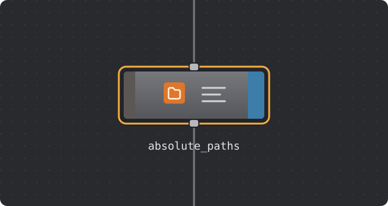

v1.1 · Houdini 22Houdini Absolute Paths
Convierte $HIP, $HIPNAME, $HIPFILE y $JOB en rutas absolutas en toda la escena, para copiar el .hip sin romper ningún link.
Huella SHA-256 del script en SHA256SUMS.
Uso
- Con la escena abierta, abre Windows → Python Shell y ejecuta el script con el comando de abajo.
- Revisa en la consola la lista de parámetros cambiados (ruta anterior y nueva) y los omitidos.
- Guarda el .hip. Todo el cambio es un solo paso de Undo.
Cambia la ruta por la carpeta donde descargaste el script:
exec(open(r'RUTA/hip_to_absolute_paths.py', encoding='utf-8').read())O copia el script y pégalo en Windows → Python Source Editor; pulsa Apply para ejecutarlo.
Para ver qué cambiaría sin tocar nada, pon DRY_RUN = True al inicio del script.
Se conservan $F, $F4, $OS, <UDIM> y el resto de variables. También fija el Base Name del File Cache, que usa $HIPNAME.
No toca el interior de HDAs bloqueados, los parámetros bloqueados ni las expresiones que usan $HIP: los lista como omitidos para revisarlos a mano.
Los ROPs y nodos de render no se tocan: sus rutas de salida siguen al .hip copiado, así no se sobrescriben los renders originales. El File Cache sí se convierte. Pon SKIP_ROPS = False para convertirlos también.
Los caches no se mueven: las rutas quedan apuntando a su ubicación actual.